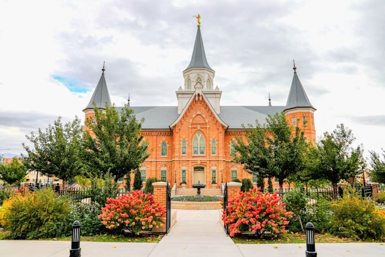

Provo City Center, Utah TempleProvo City Center, Utah TempleProvo City Center, Utah TempleProvo City Center, Utah TempleProvo City Center, Utah TempleProvo City Center, Utah TempleProvo City Center, Utah TempleProvo City Center, Utah TempleProvo City Center, Utah Temple